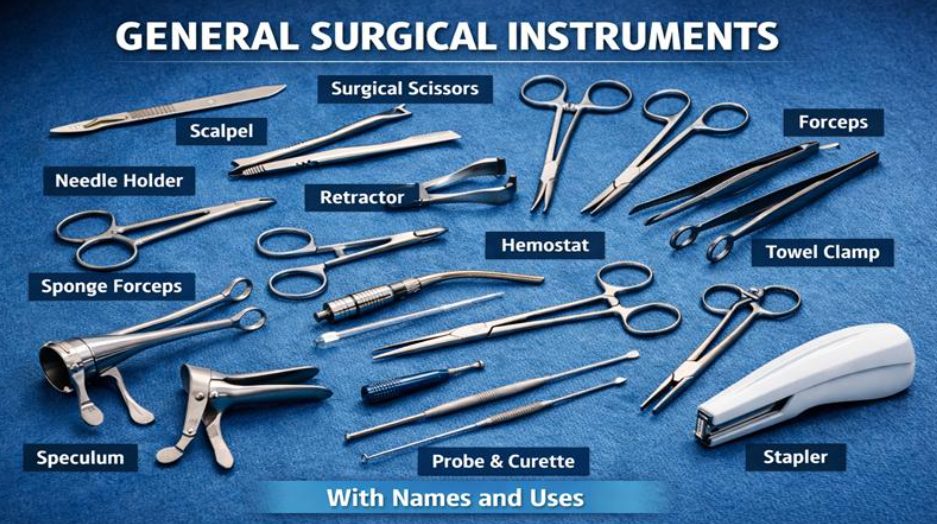
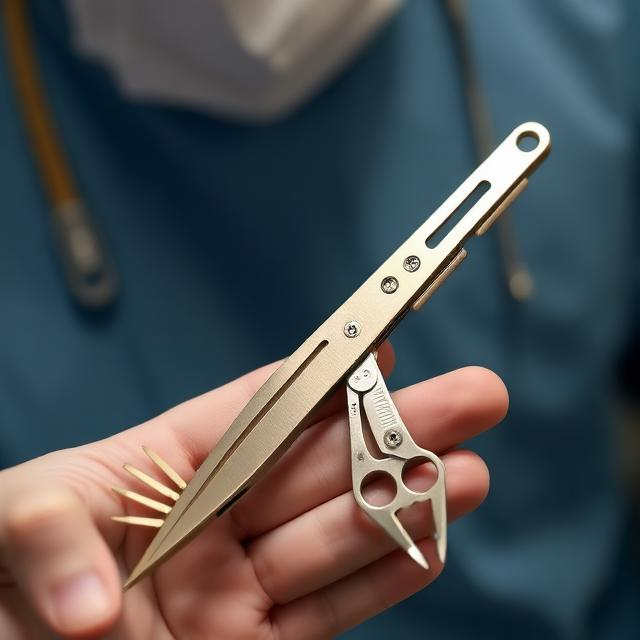

Throughout history medicine has modernized overtime in which we can do many things that our early ancestors could not achieve such as our vaccines, our medical technology like X-rays, EKGs, and Patient Monitors, all of these were possible due to human intellect and our desire to keep improving our now advanced technology.
Today, doctors still try to find new sorts of tools or ways to make their surgeries more successful in which they can make little to no mistakes and the patient is able to not run into any issues during the surgery.

Existing medical technologies we currently have are the medical scalpel, scissors, pliers, and forceps. These tools are a must in basic surgery in which they can cut open the patient and see if there are any obstructions or errors in the person's body. This modern technology has many benefits to us as a society but it also raises concerns that often make both me and other people anxious. We have questions that we often ask ourselves: is the surgery being done in us safe? Will there be anything that could slip in? This is what I made in order to try and resolve this situation.
My proposition is to make a multipurpose scalpel. The purpose of my tool is to ensure that no medical tools fall inside the patient, which could lead to issues such as severe bleeding and organ damage. I believe the multipurpose scalpel is important for future doctors and surgeons because there are so many tools for the doctors to use, often requiring an assistant just to manage all these tools. This can be inconvenient for not only the surgeon but also the nurses, especially under the immense pressure of ensuring patient safety and efficiency.
